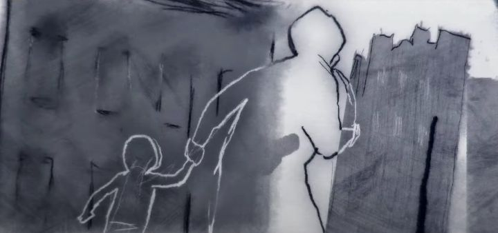

The 2021 animated-documentary "Flee" quickly got comparisons to other acclaimed animated-documentaries that take place in the Middle-East. Specifically, "Persepolis" and "Waltz with Bazhir." It's been a long time since those came out, but I still felt a sense of deja vu. Why was it that this particular subject matter kept using animation to tell its story? And despite universal acclaim of "Flee," was it worth hearing the stories again?But that's an unfair sentiment. There are many countries, each with many stories over its relatively-recent history. And "Flee" more than justifies itself, and particularly the use of animation, if for nothing else than to hide the identities of the real-world subjects. This is specifically the tale of Amin Nawabi (the film starts by mentioning the names and places were changed slightly to protect identities). Today, Amin is a grown man living in Denmark, engaged to his male partner. Presented as a documentary, we see an animated Amin in a series of interviews by a Dutch filmmaker, reminiscing about his life as a refugee, fleeing from Afghanistan in the 1980's. At the time, Afghanistan is presented as a peaceful and ideallic place; as a young child, Amin runs around in his sister's dress listening to a Walkman, a hint to his sexuality, and is presented with smiles for his mischief as he sprints to his family's modern home. But as a communist movement begins to take over, his father is arrested, first kept in jail before disappearing entirely. His older brothers run to avoid being forced into the army. Left with little choice, the family flees the country, primarily to Russia as illegal immigrants, hiding out until they get the chance to escape as refugees to a family member in Switzerland. The journey isn't easy. Taking place over years, they hide from corrupt Moscow police, and put their lives in the hands of human traffickers, stuck in cramped and dangerous conditions. The family is separated into different smuggling trips. Some trips fail, and they're stuck in Russia for years more. Amin is forced to lie. He is helpless to support others around him in worse situations. All the while, he tries to hide his homosexuality, which he recognizes in himself early on, but knows is not accepted Afghanistan; what would his family, his only connection to ground himself, think? It's a harsh journey that affects him many years later, affecting his relationships and how he lives his life, even after finding safety and a place to call home.  I can't recall many films that are specifically about the refugee experience. It's sometimes hard to recognize and symphasize with refugees, sometimes with reasons as little as "we're poor," but here, there's no question that Amin's escape was necessary, and that his treatment on the way to freedom was terrifying. And the format makes for effective storytelling. The voice acting, presumably by the real people, feels authentic and personal (voiced in Dutch, an English dub is also reportedly in the works, but wasn't available upon initial release). The only disappointing aspect was the animation. The visuals are drawn like a French comic, which is deliberately simplified and grounded in reality. In a biographical graphic novel, it'd feel at home, but it feels lacking in a movie. And the animation is severely limited, sometimes with barely a few frames for seconds of movement. It treads the line of animation and slideshow. The framing of each shot is done with care though, and the movie is clever to use different styles of animation with intention, typically indicating differences between present-day Armin, his first-account memories, memories he heard from others, or lies he told. Some brief clips of live-action footage is also used to remind us that the story was real. "Flee" might not be an animation powerhouse, but it's a beautiful biographical documentary that deserves to be viewed.
- "Ani" More reviews can be found at : https://2danicritic.github.io/ Previous review: review_FLCL_Progressive,_FLCL_Alternative Next review: review_Flip_Flappers